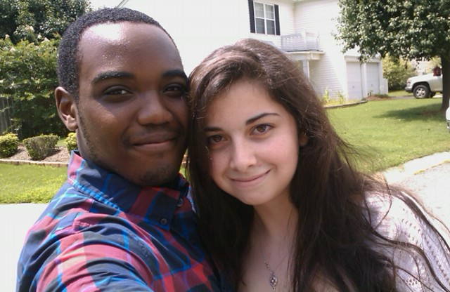

Hi! My name is Bradley Fred Biera, and I was born in Edison, New Jersey on March 10, 1995. I have an older half-sister, an older sister, and a one minute-younger twin brother. I've moved three times in my life: from Edison, New Jersey to Liberty, South Carolina; From Liberty, South Carolina to Fountain Inn, South Carolina; and from Fountain Inn, South Carolina, to Simpsonville, South Carolina. I have three pet cockatiels as pets (named Junior, Georgy, and Little Birdy). My hobbies include guitar, piano, drums, ukulele, bass, listening to music, writing/composing music, drawing, building, playing video games, making jokes, hanging out with friends, and watching movies. I currently attend University of South Carolina Upstate as part of Class of 2017. My major is Computer Information Systems and in the future I hope to work somewhere in the computer field and to make music on the side, which includes on my YouTube channel: BradleyBieraMusic.
Facebook: facebook.com/bradley.biera
YouTube: youtube.com/user/bradleybieramusic
Email: bbiera@email.uscupstate.edu
Fun facts about me include:
- I graduated valedictorian from my high school, Brashier Middle College Charter High School
- my YouTube channel just hit 1000+ views!
- my twin brother and I look nothing alike
- I have a deep love for music, but have yet to go to a concert
- my dad, when my age and older, was a great multi-musician who lead the marching band and even played in studio with well-known musicians
Why I chose my major and possible minor:
- my dad works in the Information Technology field as a database worker
- I've been on computers since I was little and have always liked them
- I feel I am good with computers and file management (as I do it a lot)
- I am considering a minor in Commercial Music from a deep fascination and love for music (thoroughly explained above and throughout website)
Some cool websites related to music:
- Ultimate Guitar.com - www.ultimate-guitar.com
- Guitar Center.com - www.guitarcenter.com
- YouTube.com - www.youtube.com